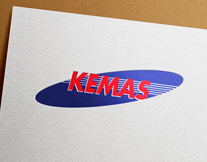
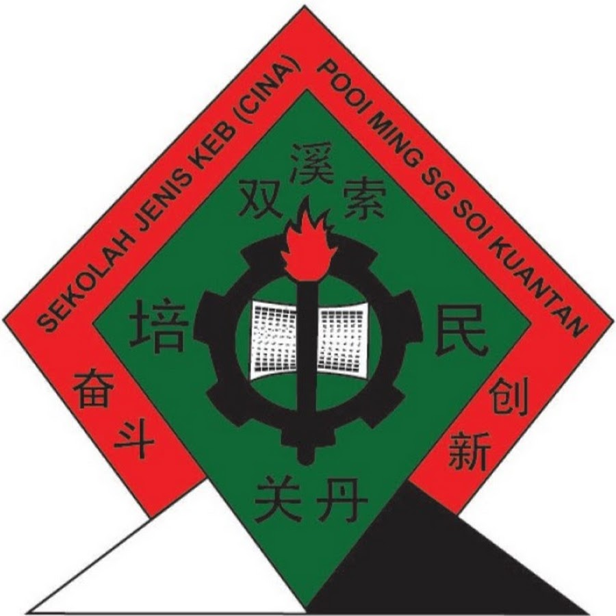
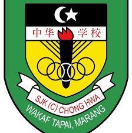

EDUCATION
Learning quotes from
In youth we learn; in age we understand.
1. Tabika Kemas Kempadang, Pahang
This is my kindergarten. I used to study here when i was 5 and 6 years old.
I still remember the time when my mom waited for me beside the window
of my class, peeping through inside the class just to stop me from crying.
2. SJK(C)Pooi Ming, Kuantan
This is my first primary school. My father send me into a chinese school
for me to learn mandarin language. It was so awkward when i first enter
the school and everyone was talking in mandarin language and i just stand
there don't know what to do. I was 7 years old during that time and i studied
here only until 8 years old before my family moved to Terengganu. I have
only 2 to 3 friends here since i don't know how to communicate with them.
3. SJK(C)Chong Hwa Wakaf Tapai, Terengganu
This is my second primary school when i first moved to Terengganu.
It was so fun here because i already know to speak in mandarin a little
bit when i first enter this school. I met my childhood friend here and she
had been my best friend until now. I started to know how to read, write
and speak in mandarin. It was easier for me to make friends since i already
understand the conversation. I was once resent my father for sending me
into an unfamiliar places but now, i'm thankful for the experience and knowledge
i've learned so far. I can speak mandarin fluently now.
I also have tons of chinese friends which i'm thankful for.
4. SM Teknik Kuantan, Pahang
This is my secondary school. When i studied here, i need to stay at their
hostel when i was 16 to 17 years old. This is the time when i had my
SPM examination. It was a memorable experience when i'm forced to stay
at the hostel and be 100% independent. I need to do everything by myself without
my parents guidance. It was hard during the first few weeks but i'm adapting myself
well there. Probably because i was already 16 during that time. It was so enjoyable
to have my friends living together and studying together at one place. But sometimes
it was also quite stressful when i miss my family. I remember when the time
we are not allowed to go back home for 1 month and it was so stressful because
you only can call your family using public phone.
But all in all, in was a very memorable chilhood memory for me.
5. Politeknik Ungku Omar, Ipoh

This is the first place of my tertiary education. I pursue my study
in Ipoh after finish my SPM examination. It was also a first time experience
when i need to live far from my family. My family was in Kuantan but
i have to be in Ipoh for my acadmic. I'm a diploma holder of Business Studies.
I started my study here from June 2018 and ended it on July 2021 with a CGPA of 3.76.
6. UiTM Kampus Kota Bharu, Kelantan
I'm currently pursuing my degree at UiTM Kota Bharu, Kelantan.
The program that i'm taking is Bachelor in Business Administration (Hons.) Finance
and already on my 4th semester. Kelantan is my birth place but
this is actually the first time i'm staying here. It was a fun place with a
lot of good foods. I'm staying at a rental house with my friends that took
7 to 8 minutes drive to UiTM Kota Bharu.